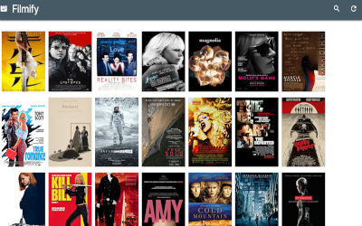

My Work
Check out some of my projects:

Filmify, media search & selection app
Technologies Used: JavaScript, Node.js live-server, React, Materialize CSS, MongoDB, Mongoose
Designed and executed the build of a uniquely tailored search application that integrated database and IMDb api queries in a truncated MVP timeline. Utilized a responsive CSS framework to style dynamically rendering React components.